A secure Android app protects its code, its data, its doors and its connections. It checks all of them again before each release.
An Android app runs on a device that you do not control, in the hands of people that you do not know. Some of them are curious, and a few of them are hostile. This article collects the practices that make an app strong against modern threats. Each practice comes with the risk behind it, a real-life comparison and the steps or code that put it into effect.
A story to begin
Think of your app as a small shop in a busy market. Customers trust it with their money and their details. Walk through one day in the life of the shop, and note the questions on the way.
The shop opens
You unlock the front door. Your recipes hang on the wall, and the key to the cash box sits under the doormat. Any visitor can read the recipes and lift the mat.
The back room
Customer cards go into boxes in the back room. Some boxes stand in the shared corridor. A helper writes every order, with names and card numbers, into a notebook on the counter.
The side doors
The shop has a side door for deliveries, and nobody locked it. A loudspeaker announces each order to the whole street. A stranger hands over a note that changes the order book.
A strange visitor
A customer arrives with a payment terminal that he built himself. He also asks for the home address of every other customer.
The deliveries
Couriers carry orders across town in open baskets. The warehouse door has no lock, and the order slips use a secret code that every child knows.
The last round
Before you leave, you walk through the shop with a checklist. Every door, every box and every light gets one look.
Six layers of defense
Each scene of the story matches one layer of defense. An attacker must break through all of them, so a weak layer does not decide the outcome on its own.
![Rings around the app show five layers. Ring 1 is the code and its secrets, ring 2 is data on the device, ring 3 is the app boundaries, ring 4 is the device and the user and ring 5 is the network and the backend. A list on the right names each layer with its topics. Code and secrets covers R8, API keys and libraries. Data covers storage, encryption and logs. Boundaries cover components, permissions, WebView and input. Device and user covers integrity checks and personal data. Network and backend covers HTTPS, Firebase, messages and transfers. A sixth item is a release checklist.](../assets/img/diagrams/ab-overview.svg)
Turn on shrinking and obfuscation
An Android Package (APK) is a ZIP file. Free tools turn its bytecode back into readable Java or Kotlin within minutes. Readable class names such as PaymentManager and verifyCard show an attacker exactly where to look.
R8 is the code shrinker of the Android build. It removes unused classes and methods, renames the rest to short names without meaning and optimizes the bytecode. The result is a smaller app that is much harder to understand.
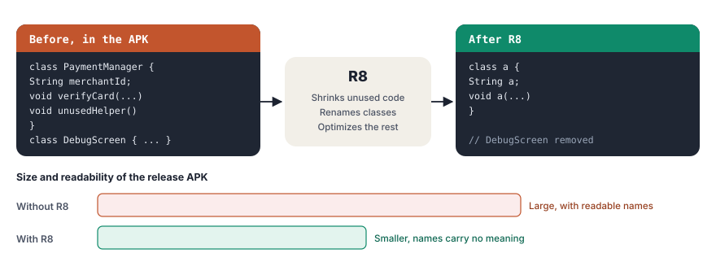
android {
buildTypes {
release {
isMinifyEnabled = true // shrink, rename and optimize code
isShrinkResources = true // remove unused resources
proguardFiles(
getDefaultProguardFile("proguard-android-optimize.txt"),
"proguard-rules.pro"
)
}
}
}Test the release build carefully. Code that uses reflection, serialization or the Java Native Interface (JNI) can break when R8 renames a class. Add a -keep rule for exactly those classes and for nothing more. Keep the mapping.txt file of each release, because you need it to read the stack traces of crashes.
Obfuscation slows an attacker down. It does not hide a secret. Never ship a production app without R8, and never trust R8 to protect a key.
Keep API keys off the device
Apps use keys for maps, payments, analytics and many other services. A key in the app is a key in the hands of every user. A string in Kotlin code appears in a decompiler at once. A string in native code from the Native Development Kit (NDK) takes a little longer. The attacker needs the strings tool or a runtime hook. Both places only delay the attacker.
![On the left, three places for a key, from weak to strong. A key in Java or Kotlin code shows up in a decompiler in seconds. A key in native code is still found with the strings tool or a runtime hook. A key only on your server never reaches the app, and the server calls the API. On the right, a key that must ship in the app, such as a Maps key, gets restrictions in the console. These are an application restriction to Android apps, the package name, the SHA-1 certificate fingerprint of the signing key, an API restriction to only the APIs in use, and quotas with alerts.](../assets/img/diagrams/ab-api-keys.svg)
The real protection is architecture.
- Secret keys stay on your server. The app calls your own backend with the token of the signed-in user. The backend checks the user, adds the secret key and calls the paid or private service. A payment key, a key for a large language model or a database password belongs here.
- Public keys get restrictions. Some keys must ship in the app, for example a key for a map view. Restrict such a key in the Google Cloud console to Android apps, to your package name and to the SHA-1 fingerprint of your signing certificate. Also restrict it to the few APIs that the app uses, and set quotas and alerts.
- Keys rotate. If a key leaks, replace it at once. A server-side design lets you change it without a new release of the app.
- Keys stay out of the repository. Keep them in a local properties file or in a secrets manager of your build system, never in version control.
With the restriction in place, a stolen key works only in requests that carry your package name and certificate fingerprint. An attacker can still copy both values into a crafted request, so restrictions reduce abuse but do not replace a server for real secrets.
Keep your dependencies current
Most code in a modern app comes from libraries. An old library version can carry a known weakness that a newer version already fixed. Attackers search for apps with such versions, because the weakness and often a working exploit are public.
- Update libraries, the Android Gradle Plugin and Kotlin on a regular schedule.
- Let a tool such as Dependabot or Renovate open pull requests for new versions.
- Read the release notes for security fixes, and give them priority.
- Check the Google Play SDK Index for warnings about the SDKs that you use.
- Keep the target API level current. Each new level turns on more protections of the platform, and Google Play requires a recent level for updates.
- Remove libraries that the app no longer uses. Unused code is attack surface without any benefit.
Use internal storage for sensitive data
Every app has its own internal storage folder. Its path contains the package name of the app, and the Linux user of the app owns it. Files that the app creates there with the default MODE_PRIVATE are readable only by that app. The device also encrypts this storage at rest, and Android deletes it when the user removes the app.
![Internal app storage under /data/data/<package> can be read only by your app, is encrypted at rest by the device and is removed at uninstall. Use it for all private data. App-specific external storage under /sdcard/Android/data/<package> is blocked for other apps on Android 11 and later, can sit on a removable card and is removed at uninstall. Encrypt data before you write it there. Shared storage such as Pictures, Downloads and Documents can be read by the user and by apps with media or file access and stays after uninstall. Never use it for private data.](../assets/img/diagrams/ab-storage-map.svg)
// Private to this app. Other apps cannot open it.
context.openFileOutput("session.json", Context.MODE_PRIVATE).use { out ->
out.write(sessionJson.toByteArray())
}
// Also private: context.filesDir, context.cacheDir,
// SharedPreferences, DataStore and Room databases.Never use the old modes MODE_WORLD_READABLE or MODE_WORLD_WRITEABLE. Modern Android throws an exception for them. To share one file with another app, use a FileProvider and grant access to that file only.
Encrypt data outside internal storage
Large files such as photos and videos sometimes go to external storage. The folder of the app on external storage is closed to other apps from Android 11 on. It can still sit on a removable card, and it gets no app-specific encryption. Shared folders such as Pictures and Downloads are open to the user and to apps with media or file access. Files there also remain after the user removes the app.
Encrypt each sensitive file before you write it outside internal storage. Store the initialization vector (IV), a fresh random value, next to the ciphertext. Use the Advanced Encryption Standard (AES) with a 256-bit key in Galois/Counter Mode (GCM). GCM keeps the data secret and also detects any change to it. This detection is the check of validity that every file from external storage needs before the app uses it.
The key comes from the Android Keystore. The Keystore creates the key inside the system, and on most devices inside secure hardware. The app can use the key, but it can never read or export it.
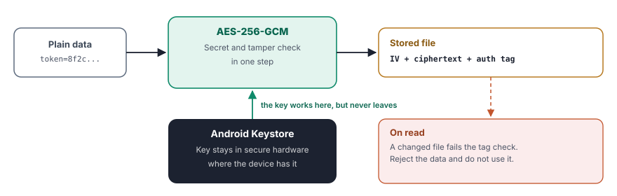
// Create the key once. It never leaves the Keystore.
val spec = KeyGenParameterSpec.Builder(
"file_key",
KeyProperties.PURPOSE_ENCRYPT or KeyProperties.PURPOSE_DECRYPT
)
.setBlockModes(KeyProperties.BLOCK_MODE_GCM)
.setEncryptionPaddings(KeyProperties.ENCRYPTION_PADDING_NONE)
.setKeySize(256)
.build()
val generator = KeyGenerator.getInstance(KeyProperties.KEY_ALGORITHM_AES, "AndroidKeyStore")
generator.init(spec)
generator.generateKey()
// Encrypt. Store the IV next to the ciphertext.
val key = (KeyStore.getInstance("AndroidKeyStore").apply { load(null) }
.getEntry("file_key", null) as KeyStore.SecretKeyEntry).secretKey
val cipher = Cipher.getInstance("AES/GCM/NoPadding")
cipher.init(Cipher.ENCRYPT_MODE, key)
val iv = cipher.iv
val encrypted = cipher.doFinal(plainBytes)
// Decrypt. A changed file throws AEADBadTagException.
cipher.init(Cipher.DECRYPT_MODE, key, GCMParameterSpec(128, iv))
val plain = cipher.doFinal(encrypted)Protect tokens and passwords
Access tokens, refresh tokens and other credentials need the same care, even inside internal storage. A backup, a rooted device or a bug in another part of the app can expose plain files. Store such values encrypted with a Keystore key, as above, for example inside DataStore. The Jetpack library security-crypto with EncryptedSharedPreferences is deprecated, so new code uses the Keystore directly or a maintained library such as Tink.
- Do not store a password at all. Store a token from your server, and let the server end it when needed.
- Keep tokens short-lived, and refresh them over HTTPS.
- Exclude sensitive files from cloud backup with the rules in
data_extraction_rules.xml. - For the most sensitive keys, require user authentication with
setUserAuthenticationRequired(true), so the key works only after a fingerprint or a screen lock check.
Keep sensitive data out of the logs
Developers log service addresses, response bodies, user names and crash details while they build an app. These lines often stay in the release build. Since Android 4.1, an app can read only its own log entries. Other readers still exist. A person with a USB cable and the Android Debug Bridge (adb) can read the whole log. So can a rooted device or a system app.
Crash reporting services also collect log lines and send them to a server.
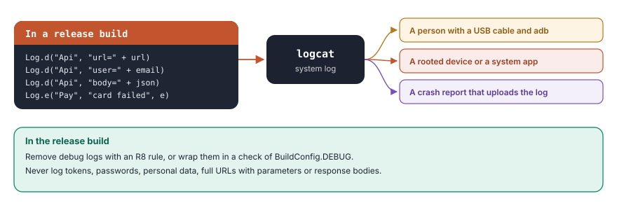
Remove debug logs from the release build. An R8 rule can delete the calls completely.
# Remove verbose, debug and info logs from release builds
-assumenosideeffects class android.util.Log {
public static int v(...);
public static int d(...);
public static int i(...);
}- Never log passwords, tokens, keys, card data or personal data, even in debug builds.
- Log an identifier or a status code instead of a full response body.
- Use a logging library that you can switch off for release builds in one place.
- Check the crash reports of your app for data that does not belong there.
Protect services and content providers
Apps often run work in a background service, for example a download, a sync or a payment. Content providers share data from a database. If such a component is exported, any app on the device can start it or query it. A malicious app can then trigger a payment, read notes or feed false data to the service.
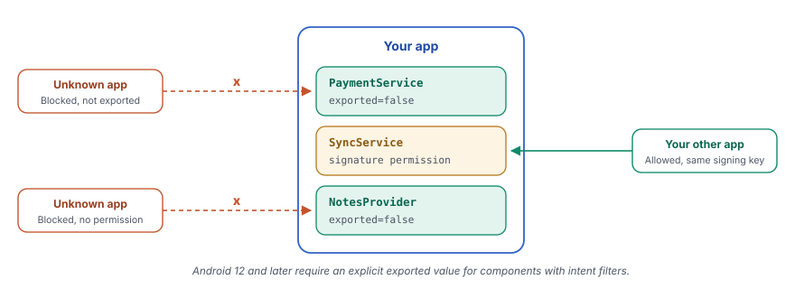
<!-- Only this app can start the service. -->
<service
android:name=".PaymentService"
android:exported="false" />
<!-- Only apps signed with the same key get this permission. -->
<permission
android:name="com.example.shop.permission.SYNC"
android:protectionLevel="signature" />
<service
android:name=".SyncService"
android:exported="true"
android:permission="com.example.shop.permission.SYNC" />
<provider
android:name=".NotesProvider"
android:authorities="com.example.shop.notes"
android:exported="false" />- Set
android:exported="false"on every component that other apps do not need. From Android 12 on, the build requires an explicit value for each component with an intent filter. - If another app of yours needs access, protect the component with a permission of the
signaturelevel. - Start your own services with explicit intents that name the class.
- Inside an exported component, check all data in the incoming intent before you use it.
Request as few permissions as possible
During development, permissions pile up in the manifest. A team adds the camera, the location and the contacts for features that later change. The release build keeps them all. Each extra permission widens the damage of any bug, worries users and draws questions in the store review.
- Review the manifest before each release, and remove every permission that no feature uses.
- Also check the merged manifest, because libraries can add permissions of their own.
- Prefer system pickers that need no permission, for example the photo picker instead of storage access.
- Limit old permissions to old versions with
android:maxSdkVersion. - Ask for a runtime permission at the moment when the user starts the feature, and explain the reason.
- Ask for approximate location instead of precise location when the feature allows it.
<!-- Needed only on Android 9 and older. -->
<uses-permission
android:name="android.permission.WRITE_EXTERNAL_STORAGE"
android:maxSdkVersion="28" />
<!-- Remove a permission that a library adds. -->
<uses-permission
android:name="android.permission.READ_PHONE_STATE"
tools:node="remove" />Do not broadcast sensitive data
A normal broadcast goes through the system. Any app that registers a receiver for the same action gets a copy. If the intent carries a token, an order or a location, other apps receive it as well.
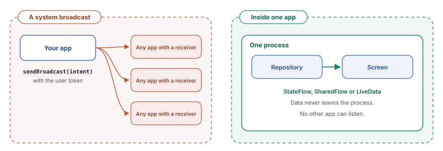
For events inside one app, do not use broadcasts at all. The old LocalBroadcastManager is deprecated. Use an observable stream instead, such as StateFlow, SharedFlow or LiveData. For a broadcast that must reach a receiver, keep it private.
// Send only to your own app.
val intent = Intent(ACTION_SYNC_DONE).setPackage(context.packageName)
context.sendBroadcast(intent)
// Register a receiver that other apps cannot reach.
ContextCompat.registerReceiver(
context,
receiver,
IntentFilter(ACTION_SYNC_DONE),
ContextCompat.RECEIVER_NOT_EXPORTED
)Use WebView JavaScript with caution
A WebView brings the web into your app, and with it the common weaknesses of the web, such as cross-site scripting (XSS). The largest risk is the JavaScript bridge from addJavascriptInterface. Every page that loads in the WebView can call the methods of the bridge. If an untrusted page or an injected script loads, it acts with the permissions of your app.
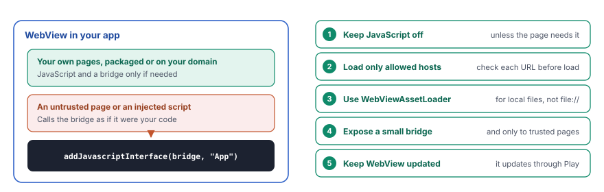
val loader = WebViewAssetLoader.Builder()
.addPathHandler("/assets/", WebViewAssetLoader.AssetsPathHandler(context))
.build()
val allowedHosts = setOf("appassets.androidplatform.net", "www.example.com")
webView.settings.apply {
javaScriptEnabled = false // turn on only for your own pages
allowFileAccess = false // no file:// access
allowContentAccess = false
}
webView.webViewClient = object : WebViewClient() {
override fun shouldInterceptRequest(view: WebView, request: WebResourceRequest) =
loader.shouldInterceptRequest(request.url)
override fun shouldOverrideUrlLoading(view: WebView, request: WebResourceRequest) =
request.url.host !in allowedHosts // true blocks the load
}- Turn on JavaScript only when the page needs it, and add a bridge only when you fully control and trust every page.
- Give the bridge a few small methods with simple parameters. Check each parameter inside the method.
- Load local content through
WebViewAssetLoaderinstead offile://addresses. - Open other links in the browser or in Custom Tabs, not in the WebView.
Validate user input
Data from a user, a deep link, an intent or a file is untrusted. In SQLite, the classic risk is SQL injection. If the app builds a query by joining strings, the input can change the meaning of the query itself.
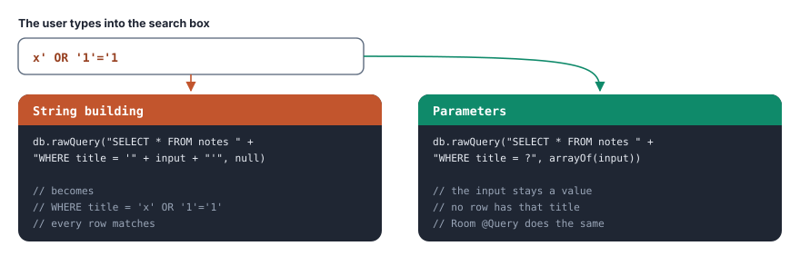
// SQLite: the ? keeps the input as a value
db.rawQuery("SELECT * FROM notes WHERE title = ?", arrayOf(title))
// Room: named parameters do the same
@Query("SELECT * FROM notes WHERE title = :title")
fun findByTitle(title: String): List<Note>- Use parameters in every query. Never join user input into SQL.
- Check the type, the length, the range and the format of each input. Prefer a list of allowed values to a list of forbidden ones.
- Treat data from deep links and from other apps like data from a stranger.
- Check input on the server again. A modified app can skip every check on the device.
Beware of rooted devices
On a rooted device, the user or a malicious tool has full control. Tools on such a device can change the code of your app while it runs, skip a payment check or read its private files. For this reason, do not process payments or other critical tasks on a device that fails an integrity check. Turn off these features automatically, and tell the user the reason.
A check that runs only inside the app is weak, because the same tools can change its result. Use the Play Integrity API instead. Google Play returns a signed and encrypted verdict about the app, the device and the account. Your server decodes the verdict and makes the decision.
![Four lanes, your app, Google Play, your server and the payment step. One, the server and the app agree on the payment details to protect. Two, the app asks Google Play for an integrity token with a hash of those details. Three, Play returns a signed and encrypted token. Four, the app sends the token with the payment request. Five, the server decodes the token with Google and reads the verdicts. Six, the server allows the payment only on a trusted device. The decision is made on the server, because code on the device can be changed.](../assets/img/diagrams/ab-integrity.svg)
val manager = IntegrityManagerFactory.createStandard(context)
manager.prepareIntegrityToken(
PrepareIntegrityTokenRequest.builder()
.setCloudProjectNumber(CLOUD_PROJECT_NUMBER)
.build()
).addOnSuccessListener { provider ->
provider.request(
StandardIntegrityTokenRequest.builder()
.setRequestHash(hashOf(paymentRequest)) // binds the token to this payment
.build()
).addOnSuccessListener { response ->
sendToServer(paymentRequest, response.token())
}
}On the server, check that the request hash matches, that the app is your genuine app from Play and that the device verdict contains MEETS_DEVICE_INTEGRITY. Decide in proportion to the risk. A news app can run everywhere, but a payment needs a trusted device.
Avoid asking for personal data
User privacy is one of the most important concerns today. Every piece of personal data that you collect needs storage, protection, reports and one day deletion. It also becomes a target for attackers. Unless you have a good reason and a very secure infrastructure, do not ask for personal data directly in the app.
- Use a trusted sign-in service. Credential Manager supports passkeys and Sign in with Google. Firebase Authentication manages accounts for you. Your app then never handles a password.
- Collect the minimum. Ask only for the data that a feature needs, at the time it needs it.
- Prefer identifiers that reset. Use an app-specific identifier instead of a hardware identifier.
- Be open about it. Describe each data type in the privacy policy and in the Data safety section of Google Play.
- Follow the law. Laws set clear duties for personal data. Examples are the Digital Personal Data Protection Act (DPDP Act) in India and the General Data Protection Regulation (GDPR) in Europe.
Use HTTPS for everything
Public Wi-Fi in a cafe, a station or a hotel is convenient but risky. A hostile hotspot sits between the app and the server. With plain HTTP, it can read every password and change every response, for example to add an unwanted ad or an exploit.
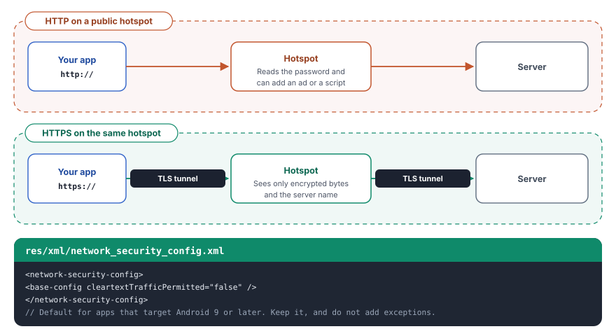
- Use HTTPS for every connection, including images, analytics and update checks.
- Keep cleartext traffic blocked. It is the default for apps that target Android 9 or later. Do not add exceptions in
network_security_config.xml. - Do not accept all certificates in a custom
TrustManagerorHostnameVerifier, not even for a test build that ships. - Pin certificates only with a backup pin and a plan for rotation, because a wrong pin locks out every user.
Write Firebase security rules
Many apps use Firebase as their backend. The client libraries talk to the database directly, so the security rules are the only guard. With open rules, a single curl command from any computer can read, change or delete the entire database. A small mistake here can ruin your app and your business.
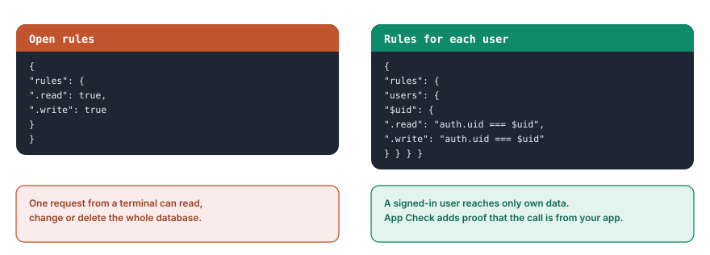
- Never leave the rules open, and never ship the rules of test mode.
- Allow each user to read and write only own data, based on
auth.uid. - Check the shape and the size of each write in the rules.
- Turn on Firebase App Check, so only your genuine app can reach the backend.
- Test the rules with the emulator suite before each deployment.
Use FCM instead of SMS
Some apps still send data or commands by SMS. The SMS protocol has no encryption, and an attacker can fake the sender. Other apps with SMS access on the device can also read the messages. Firebase Cloud Messaging (FCM) is the safer way to push a message to an app. It travels over Transport Layer Security (TLS) to a token that only your app holds.
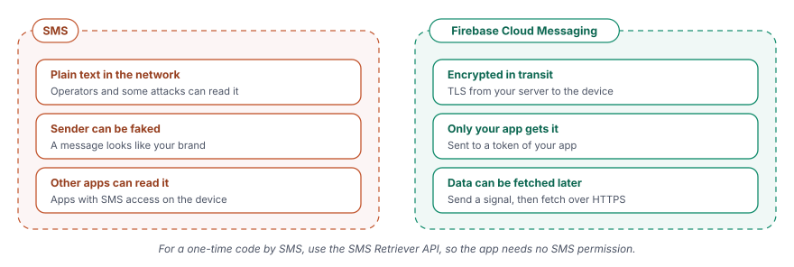
- Send a small signal through FCM, and let the app fetch the real data from your server over HTTPS.
- Do not put secrets or personal data into the notification itself.
- For a one-time password by SMS, use the SMS Retriever API. The app then reads only its own message and needs no SMS permission.
Protect data in every transfer
Apps also move data over Bluetooth Low Energy (BLE), through Message Queuing Telemetry Transport (MQTT) brokers and in QR codes. Plain text in these channels is easy to read. Encoding such as Base64 changes only the format. Anyone can reverse it in a second, so it gives no protection.
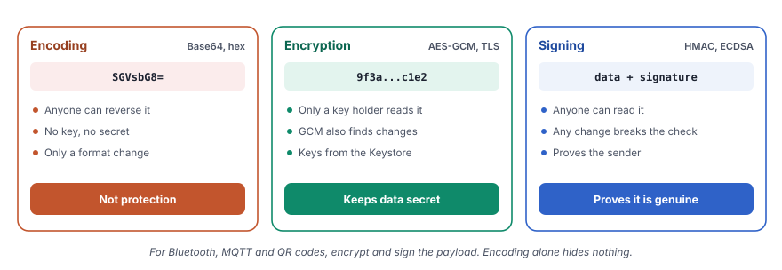
- BLE. Use LE Secure Connections pairing, and encrypt sensitive values at the application level as well.
- MQTT. Connect over TLS, usually on port 8883, with a separate credential for each device and access rules on the broker.
- QR codes. Sign the payload, so the app detects a fake code. Encrypt it as well if it contains a secret, and give it a short validity.
- All channels. Add a time stamp or a counter, so an attacker cannot replay an old message.
Security fades when nobody checks it. Run through this list before each release, and add the checks that your app needs.
| Layer | Check |
|---|---|
| Code | R8 is on for the release build, and the keep rules are as narrow as possible. |
| Secrets | No secret key is in the code, the resources or the repository. Public keys have restrictions. |
| Libraries | All libraries are current, unused ones are gone and the target API level is recent. |
| Storage | Sensitive data is in internal storage. Data outside it is encrypted with a Keystore key. |
| Logs | Debug logs are removed, and no log line holds personal data or a token. |
| Components | Every component has an explicit exported value, and exported ones have permissions. |
| Permissions | The merged manifest holds only the permissions that features use. |
| Broadcasts | In-app events use streams. Broadcasts are private. |
| WebView | JavaScript and bridges are off unless every page is trusted. |
| Input | Every query uses parameters, and the server checks input again. |
| Device | Payments and critical actions depend on a Play Integrity verdict on the server. |
| Personal data | The app collects only what it needs and declares it in the Data safety section. |
| Network | All traffic uses HTTPS, and no code accepts all certificates. |
| Backend | Firebase rules are not open, and App Check is on. |
| Messages and transfers | Pushes use FCM. BLE, MQTT and QR data is encrypted and signed. |
Key takeaways
- The device belongs to someone else. Design as if an attacker can read and change everything that ships in the app.
- Secrets live on the server. Obfuscation and native code only delay an attacker.
- Private data stays private. Use internal storage, and encrypt with a Keystore key wherever data leaves it.
- Every door has a lock. Exported components, broadcasts and WebView bridges need explicit protection.
- Input is untrusted. Parameters in queries and checks on the server stop injection.
- The server decides. Integrity verdicts, Firebase rules and input checks all work on the server side.
- Every connection is encrypted. Use HTTPS, FCM and real encryption, never plain text or simple encoding.
- Security is a habit. A short checklist before each release keeps it alive.
Choosing a safe home for data
Many of the practices above come down to one question for each piece of data. The next guide answers it in four steps.
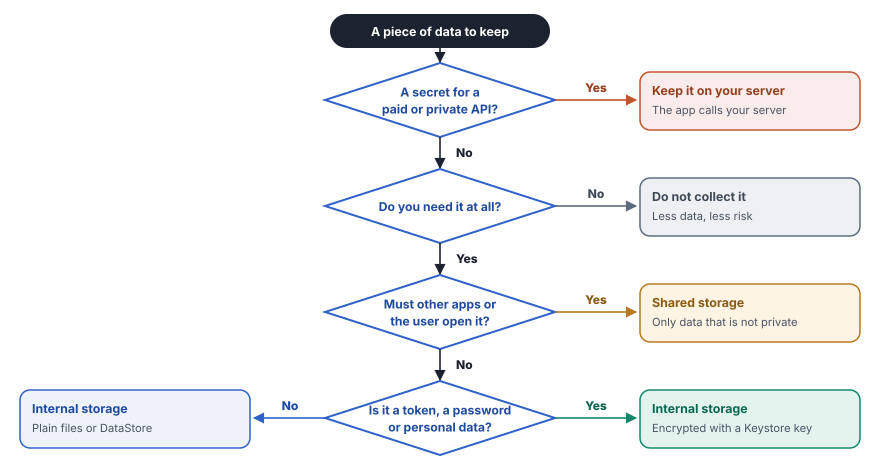
The whole article on one page
Code and secrets
- Turn on R8 with
isMinifyEnabledandisShrinkResources. - Keep secret keys on the server. Restrict public keys to the package and the certificate.
- Update libraries, and keep the target API level current.
Data on the device
- Store sensitive data in internal storage.
- Encrypt with AES-256-GCM and a Keystore key elsewhere.
- Remove debug logs, and never log secrets.
Boundaries
- Set
exported="false", or protect with a signature permission. - Request few permissions, and remove extras from libraries.
- Use streams in the app and private broadcasts outside it.
- Lock down WebView, and use query parameters.
Device and user
- Check Play Integrity on the server before payments.
- Use Credential Manager or Firebase Authentication.
- Collect only the personal data that a feature needs.
Network and backend
- Use HTTPS only, with cleartext blocked.
- Write Firebase rules for each user, and turn on App Check.
- Use FCM instead of SMS, and the SMS Retriever API for codes.
- Encrypt and sign data on BLE, MQTT and QR codes.
Release
- Walk through the checklist before every release.
- Keep the R8 mapping file of each version.
- Check crash reports for leaked data.
Check your learning
Open each question to see the answer.
R8 is on in your release build. Is a payment key in the code now safe?
No. R8 renames and shrinks code, but a decompiler or a runtime hook still finds the key. Keep secret keys on your server (Part 1).
A Maps key must ship in the app. Name two restrictions for it.
Restrict it to your package name and the SHA-1 fingerprint of your signing certificate. Also restrict it to the APIs that the app uses (Part 1).
Your app saves a video with sensitive content to external storage. What else does it need?
Encryption with AES-256-GCM and a key from the Android Keystore. GCM also detects changes to the file (Part 2).
Can another normal app read the log lines of your app on Android 12?
No. Since Android 4.1, an app reads only its own logs. A person with adb, a rooted device, a system app or a crash report can still read them, so remove sensitive logs (Part 2).
Your background service handles payments. Which manifest value keeps other apps out?
android:exported="false" on the service (Part 3).
Your app sends an event from a repository to a screen. Which tool fits best?
An observable stream such as StateFlow, SharedFlow or LiveData. LocalBroadcastManager is deprecated, and a system broadcast leaks to other apps (Part 3).
A search box builds SQL by joining strings. The input is x' OR '1'='1. What happens, and what is the fix?
The query matches every row. Use a parameter, such as a question mark in SQLite or a named parameter in Room (Part 3).
Your app checks for root on the device and then allows a payment. Is that enough?
No. Tools on a rooted device can change that check. Use the Play Integrity API, and let your server decide (Part 4).
The database rules say that read and write are true. Who can change the data?
Anybody, even with one curl command. Write rules for each user and turn on App Check (Part 5).
A QR code holds Base64 text. Is the data protected?
No. Base64 only changes the format, and anyone can reverse it. Sign the payload and encrypt it if it holds a secret (Part 5).
Your app needs a one-time password from an SMS. Which API avoids the SMS permission?
The SMS Retriever API (Part 5).
Key terms
| Term | Meaning |
|---|---|
| AES-GCM | A standard encryption mode that keeps data secret and also detects changes to it. |
| Android Keystore | A system service that creates and uses keys without letting the app read them. |
| APK | Android Package, the file format of an Android app. |
| App Check | A Firebase service that lets only your genuine app reach your backend. |
| Base64 | An encoding that writes bytes as text. It is not encryption. |
| BLE | Bluetooth Low Energy. |
| Content provider | A component that shares structured data with other parts of the system. |
| Credential Manager | The Android API for passkeys, passwords and federated sign-in. |
| Exported component | An activity, service, receiver or provider that other apps can reach. |
| FCM | Firebase Cloud Messaging, a service that pushes messages to an app. |
| Internal storage | The private folder of an app that only the app can read. |
| IV | Initialization vector, a fresh random value for each encryption. |
| MQTT | Message Queuing Telemetry Transport, a light messaging protocol for devices. |
| NDK | Native Development Kit, the tools for C and C++ code in Android apps. |
| Obfuscation | Renaming code so that it is hard to understand. |
| Play Integrity API | A Google Play service that tells your server whether the app and the device look genuine. |
| R8 | The Android tool that shrinks, obfuscates and optimizes code. |
| Rooted device | A device where the user or a tool has full system control. |
| Signature permission | A permission that only apps signed with the same key get. |
| SQL injection | An attack where input changes the meaning of a database query. |
| TLS | Transport Layer Security, the encryption behind HTTPS. |
| WebView | A component that shows web content inside an app. |
| XSS | Cross-site scripting, an attack that injects a script into a web page. |
Thank you for reading. Security grows one habit at a time. Pick one practice from this article, and add it to your app this week.